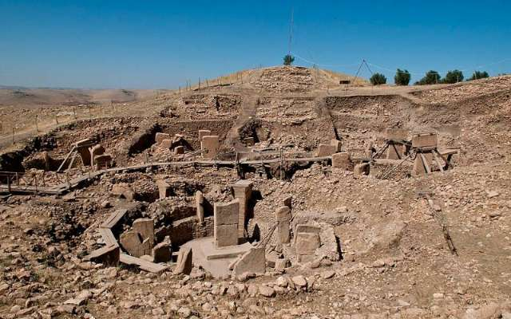

A four-day journey from humanity's oldest monumental structures to Nemrut's colossal statues, Harran's beehive houses and Mardin's stone lanes.
Day 1

Göbeklitepe, north-east of Şanlıurfa, is a Neolithic site about 11,500 years old that changed what we know of human history.

Karahantepe, in the Tektek mountains east of Şanlıurfa, is a Neolithic site contemporary with Göbeklitepe, about 11,000 years old, and one of the most remarkable sites…
Şanlıurfa Archaeology Museum is one of Türkiye's largest museum complexes and of world importance for its Neolithic collection.

Haleplibahçe Mosaic Museum in Şanlıurfa displays in place the mosaics of a Roman villa found by chance near Balıklıgöl during construction of an amusement park.

Şanlıurfa Castle rises on a crag above Balıklıgöl in the south-west of the city.
Day 2

Harran, south of Şanlıurfa, is considered one of the world's oldest cities, with thousands of years of continuous settlement.
Day 3

At the summit of Mount Nemrut, about 2,100 metres high, stands the sacred tomb that King Antiochus I of Commagene built for himself in the first century BC.

Arsameia was a sacred site and summer residence of the Commagene kings, set on a slope above the Kahta valley on the road to Mount Nemrut.

Adıyaman Museum presents the civilisations that lived along the Euphrates in this region.
Day 4

Mardin Museum stands among old Mardin's stone houses in an elegant building erected in the late 19th century as the Syriac Catholic Patriarchate.

Dara, south-east of Mardin, was a powerful frontier garrison city founded by the Byzantine Empire against Sasanian Persia in the early 6th century.
Ready-made routes organised day by day to help you plan. Durations are approximate; check opening hours and road conditions before you travel.